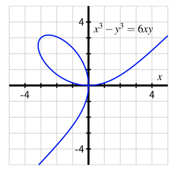

The curve pictured below, called a lemniscate, is the collection of points that satisfy the equation \(x^3-y^3 = 6xy\text{:}\)

What does it mean for a point to "satisfy the equation?" It means that when we plug in the values of the variables given by the point, we get a true statement from the equation.
For instance, if \(x=0\) and \(y=0\text{,}\) then the left side of the equation \(x^3-y^3 = 6xy\) is
\begin{equation*}
x^3-y^3 = 0^3-0^3 = 0
\end{equation*}
and the right side of the equation is
\begin{equation*}
6xy = 6(0)(0) = 0
\end{equation*}
Since both sides of the equation evaluate to the same number, they are equal to each other for the given values of \(x\) and \(y\text{,}\) making the equation "true." Hence the point \((x,y)=(0,0)\) "satisfies the equation" \(x^3-y^3 = 6xy\) and is included on the curve.
Similarly, if \(x=-3\) and \(y=3\text{,}\) then the left side of the equation \(x^3-y^3 = 6xy\) is
\begin{equation*}
x^3-y^3 = (-3)^3-(3)^3 = -27-27=-54
\end{equation*}
and the right side of the equation is
\begin{equation*}
6xy = 6(-3)(3) = -54
\end{equation*}
so the point \((-3,3)\) also satisfied the equation and is on the curve.
We can see that the lemniscate does not pass the vertical line test — for example, the line \(x=-2\) passes through the curve at three different \(y\)-values. Because the vertical line test fails, we know that the curve cannot be the graph of a function \(y=f(x)\text{.}\)